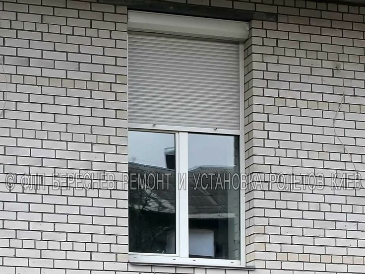

Влияние домашних животных на энергетику - Дом Солнца
2020.10.11 01:01
Журнал Сонник Стихи Гадания Тесты Рейтинг сайтов еще Поиск Вход / Регистрация Статьи Религия Психология Журнал Магия Навигатор Творчество Стихи Фото Обои Аудио Проза Службы помощи Толкование снов Психологическая помощь Духовная практика Помощь экстрасенсов Сервисы Сонник Гадания Гороскопы Психологические тесты Книги Открытки Рейтинг сайтов Афиша Форум Все проекты ··· / Журнал / Влияние домашних животных на энергетику
Влияние домашних животных на энергетику
В современном мире почти у каждого человека есть домашний любимец. Согласно фэн-шуй, не каждый питомец благотворно влияет на энергетику вашего дома. Однако многие животные способны не только приносить радость домочадцам, но и улучшать энергетический фон квартиры. Каждое животное уникально по своей природе и энергетике. Даже прикосновение к ним доставляет нам радость и поднимает настроение . Многие думают, что пообщаться с питомцами невозможно, однако это не так. Домашние любимцы чувствуют наши переживания и всегда знают то, о чем мы хотим умолчать.Искусство фэн-шуй учит людей заботиться об энергетике своей квартиры. Согласно этому учению, даже домашние питомцы могут повлиять на энергетику нашего дома. Наши предки одомашнивали животных для определенных целей и полагались в основном на интуицию. В настоящее время домашние любимцы помогают нам избавиться от одиночества. Мы привязываемся к ним, как к людям, и ежедневно дарим им свою любовь и заботу. Возможно, и они приносят нам не меньше пользы. Узнать об этом вы можете уже сейчас.
Как домашние животные влияют на энергетику дома
Животные не только дарят нам положительные эмоции и повышают настроение. Они создают гармонию в доме и очищают его от отрицательной энергетики. Кроме того, они избавляют домочадцев от бессонницы и переживаний и даже забирают болезни своих хозяев. Однако самое главное, что они способны дарить вам любовь, не требуя того же взамен. Осталось узнать, какой питомец подойдет вам лучше всего по фэн-шуй.
Кошки. В энергетическом плане кошка — самое сильное животное. Они способны очистить дом от негативной энергетики, защитить его от нечисти и других существ из астрального мира. С виду кошки кажутся спокойными и ленивыми, но на самом деле они всегда начеку. Как только они чувствуют, что им или хозяевам что-то угрожает, они тут же становятся храбрыми защитниками. Владельцы кошек не раз замечали, что их любимец может резко проснуться и направиться в определенную зону квартиры. Это говорит о том, что ваш дом посетили нечистые силы, а ваш питомец просто пытается изгнать их и защитить домочадцев от их воздействия. Кроме того, коты способны отвести беду от хозяев и даже спасти их от смерти. У кошек прекрасно развита интуиция, и они заранее могут почувствовать опасность. Если в течение дня ваш четвероногий друг находится в беспокойном состоянии и постоянно подходит к вам, не нужно игнорировать его. Скорее всего, он пытается предупредить вас о предстоящей неприятности.
Собаки. Это животное — не только лучший друг человека, но и источник положительной энергии. В доме, где есть собака, всегда царит радость, счастье, а домочадцы ссорятся гораздо меньше. Некоторые породы собак благотворно сказываются на домашней атмосфере, гармонизируя ее. Одно лишь прикосновение к собаке повысит ваш жизненный тонус и придаст вам сил. Как и кошки, они могут предупредить человека об опасности, но делают это на ментальном уровне. Если собака подошла к вам и легла рядом с вами, обязательно погладьте ее. Таким образом вы сможете узнать, о чем она хочет рассказать вам. Специалисты фэн-шуй рекомендуют уделять собакам чуть больше времени, чем другим питомцам. Злой пес — генератор проблем и негативной энергии. Если ваш любимец проявляет агрессию, проявите к нему заботу. Будучи добрыми и веселыми, собаки способны приносить в дом удачу и благополучие.
Рыбки. Многие люди заводят рыбок, потому что они не требуют особого ухода и повышенного внимания. Однако главное их достоинство заключается не в этом. Согласно фэн-шуй, аквариум, расположенный в денежной зоне квартиры (на юго-востоке), привлекает в дом богатство и финансовое благополучие. Рыбки символизируют стабильность и создают в квартире спокойствие и гармонию. Если домочадцы стали конфликтовать слишком часто, приобретите хотя бы небольшой аквариум с рыбками. Вскоре вы заметите, что отношения между вашими близкими стали значительно лучше. Не забывайте ухаживать за аквариумом, чтобы в вашем доме преобладала только положительная энергетика.
Птицы — символ мудрости. Мастера фэн-шуй рекомендуют заводить птиц людям, которые страдают от недостатка информации. Пернатые создания усилят информационное поле вашего дома и активизируют интеллектуальный процесс домочадцев. Однако энергетика птиц будет конфликтовать с энергетикой кошек или собак, поэтому держать этих животных в одном доме не рекомендуется. Кроме того, если держать птицу одновременно с другими питомцами, это грозит нарушением домашней ауры. Важно и правильно расположить клетку. Исходя из фэн-шуй, самое подходящее место для нее — на юго-восточной стороне вашего дома, так как именно там скапливается вся положительная энергетика вашего жилища. В этом случае птичка будет лишь усиливать ее.
Грызуны. Как правило, эти питомцы живут сами по себе. Они спокойные, тихие и не требуют внимания хозяев. Тогда какое же влияние они оказывают на энергетику квартиры? Если вы решили завести грызуна, то для начала нужно выбрать подходящее место для клетки. Как и в случае с птицами, клетку следует расположить на юго-востоке. Ставить ее на восточной стороне категорически запрещено. Именно в этой зоне скапливается огромное количество негативной энергии, и от ее воздействия ваш питомец может заболеть. Специалисты фэн-шуй и вовсе не советуют держать в доме грызунов. Считается, что они привлекают неудачи, тормозят материальный и духовной рост домочадцев и могут ослабить энергетику вашего жилища. Если вы желаете завести домашнего любимца, но у вас нет времени заботиться о кошке или собаке, можно отдать предпочтение рыбкам или черепашкам.
Черепахи. Несмотря на медлительность и неповоротливость черепашек, они являются символом движения. Заводить их рекомендуется целеустремленным людям, которые стремятся к новым достижениям и победам. Согласно законам фэн-шуй, черепаха — это талисман удачи. В любых начинаниях они будет приносить вам успех и придавать уверенность. Благодаря продолжительности своей жизни они сулят долголетие хозяевам и учат домочадцев мудрости. Они излучают исключительно положительную энергетику, но, как и в случае с другими питомцами, важно правильно расположить аквариум с черепахой. Благодаря своей сильной энергетике они способны усилить любой сектор вашей квартиры: все зависит от того, что вы действительно желаете обрести. Специалисты фэн-шуй утверждают, что лучше всего черепашка уживается в северной части дома.
Экзотические животные. Несмотря на то, что экзотических животных стали приручать чаще, мастера фэн-шуй делать это не рекомендуют. Такие питомцы являются энергетическими вампирами, а значит, находясь в вашем доме, они будут забирать энергию у его обитателей. Особенно их энергетическое воздействие пагубно для других питомцев, так как биополе человека гораздо сильнее, нежели энергетический фон животного. Кроме того, экзотические животные требуют особых условий и сложного ухода, из-за отсутствия которых здоровье питомца может серьезно пострадать.
Дом — это не просто наша крепость, это энергетически сильное место. Будет ли энергетика вашего дома положительной или нет, во многом зависит от вас. Благодаря мудрости фэн-шуй вы сможете очистить свой дом от негатива и сделать его энергетику положительной. Взято из открытых источников. Фэн-шуй Энергетика Животные 8 Нажми «Нравится» и читай нас в Facebook! anton159357 Подписаться
Обсуждения Влияние домашних животных на энергетику
По теме Влияние домашних животных на энергетику
Кладбище не домашних животных
В Скалистых горах, в штате Колорадо, найдено «кладбище» времен ледникового... ЖурналПовысить энергетику организма
В последнее время жизнь ускоряется с бешеной скоростью, и порой приходится... ЖурналВложения Google в альтернативную энергетику выросли втрое
Компания Google вложила 168 миллионов долларов в самую большую солнечную... ЖурналКакую энергетику несёт нам январь?
Январь, 2018 — заключительный аккорд уходящего года. Это рабочий вектор, когда... Журнал5 зимних рецептов, которые согреют и повысят энергетику
Зимние холода для многих становятся синонимом депрессии. Во время холодов и... ЖурналКак еда повышает энергетику и самооценку
Еда влияет не только на физическое состояние, но и на внутреннюю энергетику... Журнал Домашних животных Много домашних животных Рисунки домашних животных Восстанавливаем энергетику Обновляем энергетику [ На главную | В раздел Журнал ]Сонник Дома Солнца
А Б В Г Д Е Ж З И Й К Л М Н О П Р С Т У Ф Х Ц Ч Ш Щ Э Ю Я Опубликовать сонВиртуальные гадания онлайн
Гадать онлайнПсихологические тесты
Тест кем ты был в прошлой жизни Тест на ассоциации Тест на тупость Пройти тестыПопулярное
Зеркальная дата 10.10: как загадать желание, чтобы оно сбыло 10 интересных фактов про энергетику людей с зелеными глазами Сонник на Android Сонник на iOs Написать разработчику Сообщить об ошибке Помощь Размещение рекламы © 2002 -2020 Дом Солнца ™